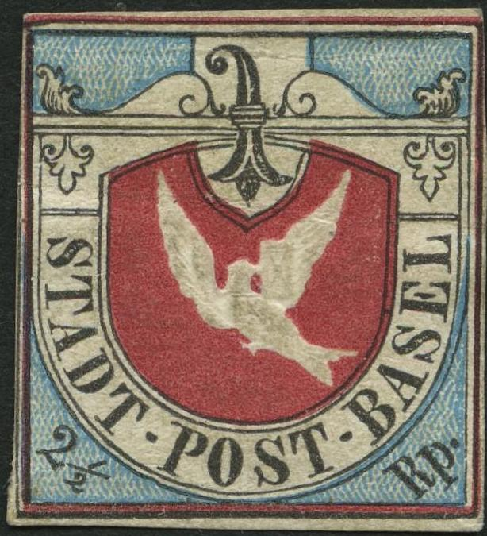
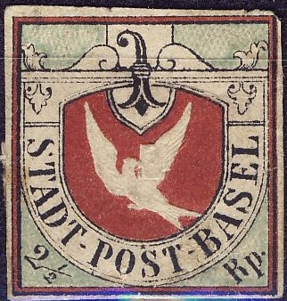
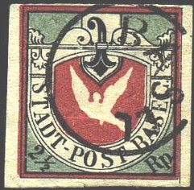
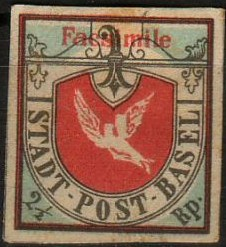
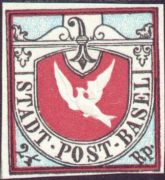
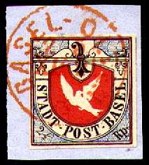
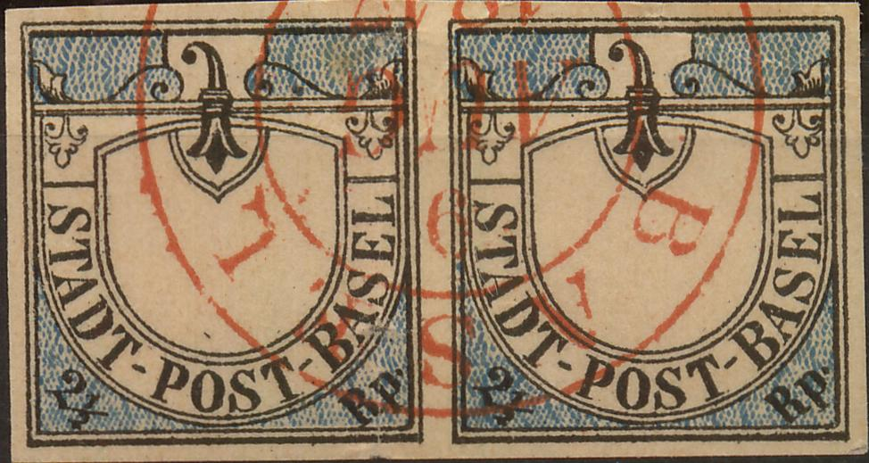
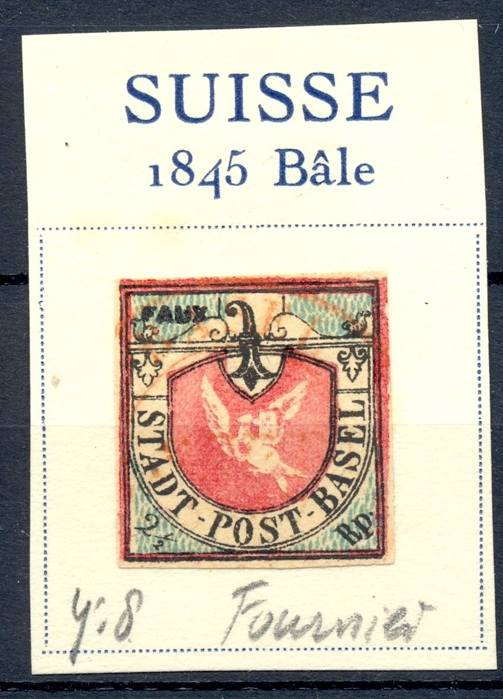

Return To Catalogue - Basle (Basel, Switzerland) - Basel forgeries Part 2
Note: on my website many of the
pictures can not be seen! They are of course present in the
catalogue;
contact me if you want to purchase the catalogue.

Genuine stamp

(First forgery)
The first mentioned forgery in literature known to me was already mentioned in Schweizer Illustr. Briefmarken-Zeitung in August 1882 (source: http://briefmarken.ag/). It seems to have been sold from 1878 onwards and was printed by a certain A. Müller in Basel. The tail of the dove makes an angle of 45 degrees (should be 90), the "A" and "D" of "STADT" are touching each other at the bottom and there is sometimes a dot above the "S" of "POST".
The stamps should have a dot behind "Rp". Furthermore there should be a "-" before and behind "POST". Also note the different letters, for example the "O" of "POST" is too round. All the genuine stamps were printed quite close to each other (3/4 mm, see genuine examples above), so the wide margins we can find in some of the above stamps betray them as forgeries as well! There is a dot behind the "L" of "BASEL", there is no such dot in the genuine stamps. The bar in 1/2 is almost horizontally in the above forgeries, in the genuine stamps it is slanting downwards. The figure '2 1/2' should not touch the lines of the border. The colour of the background is too greenish. This forgery was already mentioned in Schweizer Illustr. Briefmarken-Zeitung in June 1885. The cancel seems to constist of "BASEL" in a circle without any indication of a date. This forgery is rather common.
Due to its greenish colour it is also often referred to as a forgery of a proof:

(Forgery of the proof with cancel!)
The above forgeries have the "S" of "POST" different from the genuine stamps. Also the dot behind "Rp" is placed too high. The "L" of "BASEL" should slant backwards (it is horizontal in the above forgeries). The crossbar of the "A" of "STADT" should be slanting (it is straight in the above forgeries). In the genuine stamps, there is always a black dot connecting the two lines surrounding the shield (the dot can be found at the left hand side of the "SE" of "BASEL"). The second stamp bears a red cancel "DISTRIB" (the rest is unreadable). This might very well be the second forgery mentioned in Schweizer Illustr. Briefmarken-Zeitung in August 1882 (source: http://briefmarken.ag/).

This forgery resembles the second forgery. There in no dot behind "Rp", there is no "-" behind "POST", the "O" of "POST" is too round. It also has too wide margins with guidelines. As in the second forgery, there is a dot behind the "L" of "BASEL", there is no such dot in the genuine stamps. The colour of the background is too greenish. The upper part of the arms of Basel is situated too far away from the upper frameline when compared to a genuine stamp. I have only seen this forgery uncancelled.

(Primitive forgery, the dove is not embossed!)

A forgery with no impressed dove, with red 'Facsimile' overprint.
This is actually a cut out from a 'Stamp on a stamp' produced by
the chocolate manufacturer Tobler. The inscription around this
cut out read: "Old and new postage stamps Bale Town post
1845 TOBLER Swiss Milk Chocolate, No 674 - Serie 57 - No
673-684'.


(With overprint "FACSIMILE", Possibly a forgery made by
Champion)

(Recent forgery, note the modern white paper!)
In the above modern forgery, the dove has an extension at the back of his head. This forgery is a recent one, the paper is too bright for a stamp of this age.


In the above forgery the letters are different (for example the
"O" of "POST" is too fat). I have also seen
this forgery with a red cancel.


The easiest way to recognize the above forgery is the arms of Basel in the upper central part, the curved top of the arms is too far from the upper border of the stamp. Also there is no "-" behind "POST" and the letters are different (for example the "O" of "POST" is too fat. There is a dot behind the "L" of "BASEL". The "B" and "A" of "BASEL" seem to be joined at the bottom. I have also seen this forgery uncancelled.

I've been told that the uncancelled above forgery is a Fournier forgery. I think the above stamp with cancel is also a Fournier forgery. The stamp is cancelled "BASEL - OLTEN Z 5 XII 21 66", exactly the same as can be found in the 'The Fournier album of philatelic forgeries'. The design is very much the same as in the genuine stamps, as far as I can judge. However, the forked tail of the dove is different, the two feathers make an angle of about 90 degrees in the genuine stamps, but much less in this forgery. Fournier offers both the normal stamp and the essay in his 1914 pricelist as first choice forgeries (the normal stamp for 5 Swiss Francs and the essay for 2 Swiss Francs).
Other Fournier forgeries:


Fournier forgery and backside (reduced size); overprinted with
"FAC-SIMILE"


These Fournier forgeries of the stamp and the proof has too much
blue/green background shading in the curly ornaments besides the
arms of Basel (top center), genuine stamps have white space here

Some unfinished Fournier forgeries, the dove has not yet been
printed and the red color is still missing. The cancel has
already been applied on the pair at the right. As in the above
forgeries, the space in the curly ornaments is filled with color
(it should have been white).
See also the Fournier Album of Philatelic Forgeries for more information.
Fournier forgery on letter as found in a 'Fournier Album of
Philatelic Forgeries'.


(In these forgeries the lower part of the tail of the dove is
pointing towards the "T" of "POST" instead of
the "B" of "BASEL"). The "A" of
"STADT" is slanting too far backwards. I've seen other
samples of this forgery type with too large side margins.

Fournier also sold this type of forgery, here this forgery in a
Fournier Album. In my opinion, the "E" of
"BASEL" is different in this forgery (central tongue
too high up).
Similar unfinished forgeries.

{kind=link}
{kind=link}
{kind=link}
{kind=link}
{kind=link}
{kind=link}
{kind=link}
{kind=link}
{kind=link}